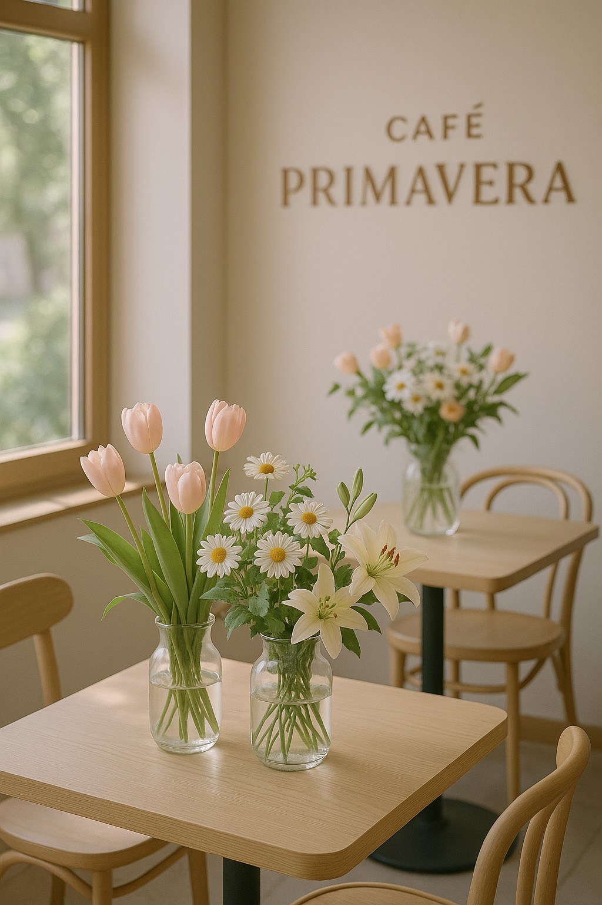
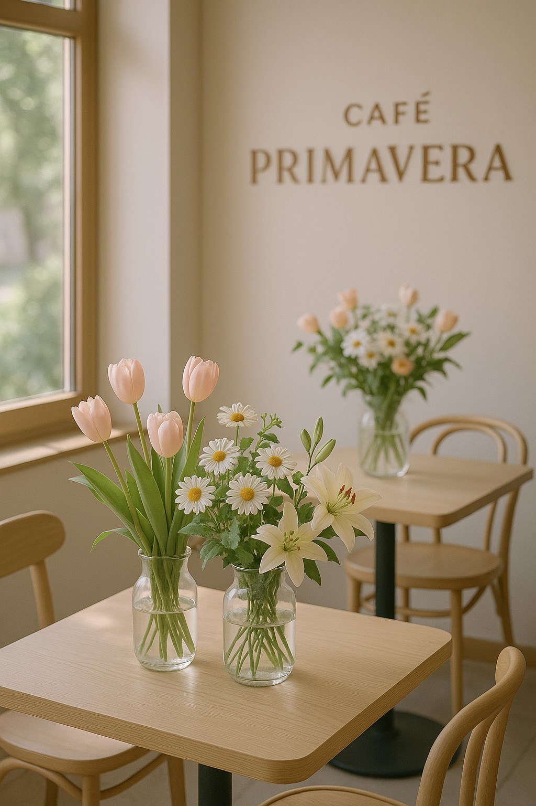

Cómo cuidar tus flores de primavera
Las flores de esta temporada necesitan luz indirecta, riego constante y un poco de amor. Te contamos cómo mantenerlas siempre vivas y radiantes.
Leer más En Café Primavera combinamos el amor por las flores con la pasión por el buen café. Descubre un espacio acogedor donde cada rincón florece con aroma y sabor.
Visita nuestro blogLas flores de esta temporada necesitan luz indirecta, riego constante y un poco de amor. Te contamos cómo mantenerlas siempre vivas y radiantes.
Leer más Descubre esta deliciosa novedad que fusiona el aroma floral con la intensidad del café. ¡Perfecto para esta estación!
Leer más